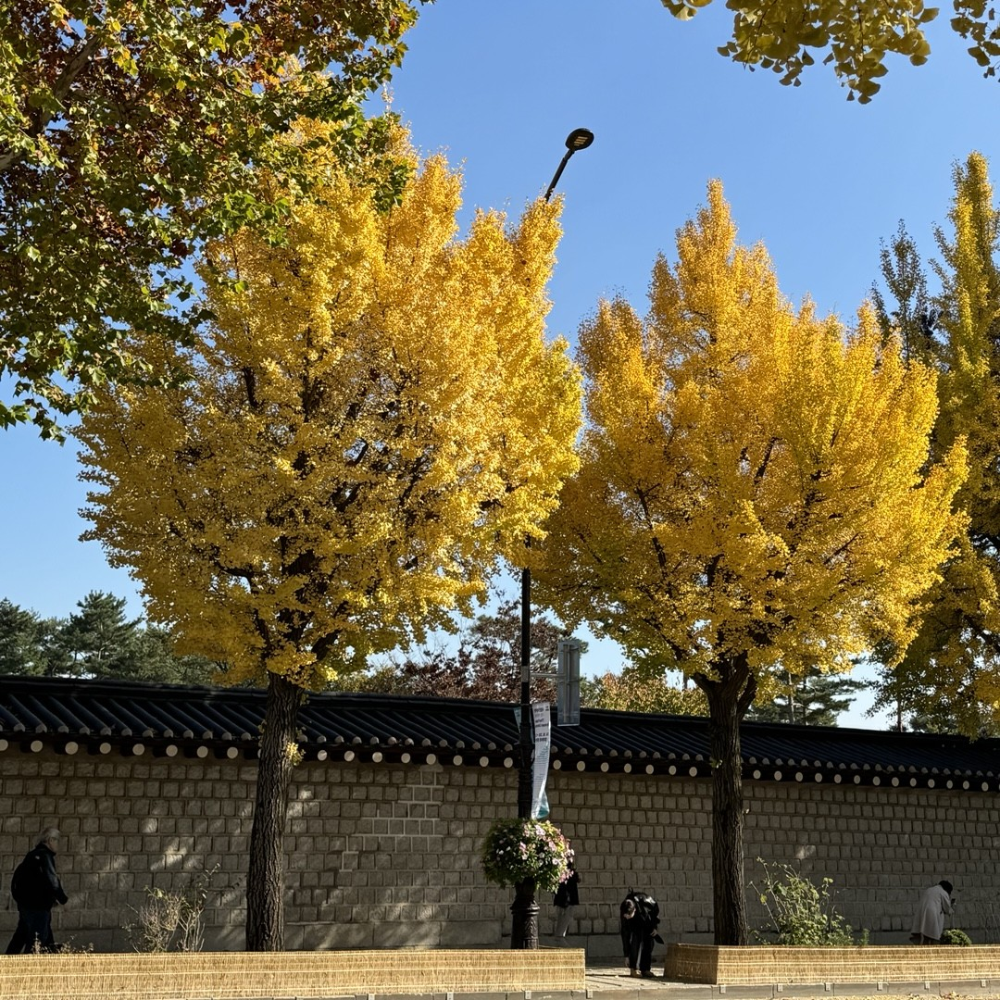
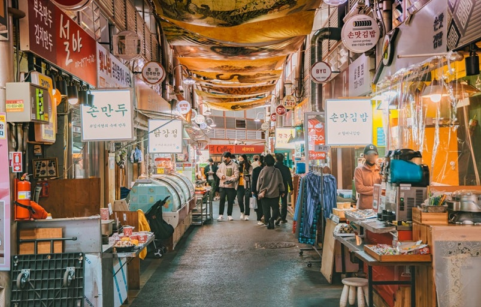

+경복궁
1. 경복궁 소개
경복궁은 조선 왕조 제일의 법궁으로, 수도 서울의 중심이고
조선의 으뜸 궁궐인 경복궁에서 격조 높고 품위 있는 왕실 문화의 진수를 느껴볼 수 있습니다.
2. 주변 놀거리

- 경복궁 돌담길
- 경복궁 돌담길은 우리나라 옛 건축물과 자연이
어우러지는 아름다운 산책로 입니다.

- 통인시장
- 통인시장은 엽전으로 음식을 구매하고 쓰레기를
줄이기 위해 식판을 사용하는 특별한 시장입니다.
- 청와대 사랑채
- 사랑채의 아름다운 풍광과 조선 왕실 밤잔치의 화려함을
모티브로 하여 구성된 전시를 진행중입니다.
3. 오시는 길
주소
(03045) 서울 종로구 사직로 161
지하철
3호선 경복궁역 5번 출구 도보 2분
3호선 안국역 1번출구 도보 6분
5호선 광화문역 2번 출구 도보 6분
버스
간선 109, 171, 272, 601, 606,710
지선 1020, 7025